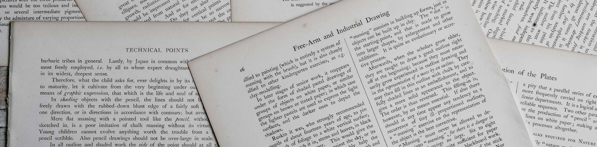

The ABC of Computational Text Analysis
#5 Basic NLP with Command-line
Recap last Lecture
- perform shell commands :joystick:
- navigate filesystem
- create/copy/move/remove files
- complete assignment :writing_hand:
- Einstieg in Shell
- Verzeichnisbaum, Erstellen von Files/Ordner
- Piping für komplexere Operationen
- Übungen ok? technische Fragen?
- letztes Mal inhaltliche Zumutung, heute erste inhaltlich interessante Analysen
- ähnliches Tempo, dafür mehr Zeit zum Üben
Get around in your filesystem :evergreen_tree:
.
├── README.md
└── lectures
├── images
│ └── ai.jpg
└── md
├── KED2023_01.md
└── KED2023_02.mdExample location of the course material: /home/alex/KED2023
pwdget the path to the current directorycd ..go one folder upcd FOLDERNAMEgo one folder down into FOLDERNAMEls -lsee the content of the current folder
Outline
- corpus linguistic using the shell :knife:
- counting, finding, comparing
- analyzing programmes of Swiss parties :bar_chart:
- Frequenzanalysen = Schweizer Taschenmesser
- äusserst effektiv
- Ziel: mehr Übungszeit
- Syntax nicht merken, Wichtiges werdet ihr schlussendlich erinnern
When politics changes,
language changes.

- Positionierung Parteien im politischen Raum über Zeit
- Gleiche Parteien, neue Ziele. Also doch nicht so gleich!
- Wie erkenne ich semantische Veränderungen?
- hier: Abstimmungsparolen von Parteien ausgewertet
- Welche Ziele/Ideologien stehen dahinter? –> Texte fundamental
- Wenn Politik ändert, ändert sich Sprache
- oder gerade umgekehrtes zeitliches Verhältnis
- in Politik werden Narrative erprobt
Processing a Text Collection
- each document as individual file (
.txt)- use shell for quick analysis
- a dataset of documents (
.csv,.tsv,.xml)- use Python for indepth analysis

- Start sehr oft Kommandozeile (z.B. Datenextraktion), dann Auswertung in Python
- txt-files erste Stufe bei Datensatzerstellung
- Daten existieren viele, Datensätze eher wenige
- bei Datensatz
- Python praktischer
- Dokument in Zelle in tsv/csv-file
- vorerst arbeiten wir nur mit txt files
Counting Things
Frequency Analysis
- frequency ~ measure of relevance
- bag of words approach
- simple
- powerful
{kind=link}
- Häufigkeit indiziert Form von Relevanz
- in Häufigkeitsanalyse sind Worte kontextlos
- BoW = Sack mit Wörtern
- Approach schmerzt aus sozialwissenschaftlicher Perspektive
- Verlust Ambiguitäten = Nachteil // radikale Vereinfachung (einfaches Zählen) = grösster Vorteil
- theoetische Übersicht von Approaches später im Seminar
- Kontrolle, was dahinter steht
- ähnlich wie Google Ngram, aber eigene Daten
Key Figures of Texts
wc *.txt # count number of lines, words, characters- zuerst Charakterisierung Datenquelle, nicht nur Inhalt
- Zahlen für einzelne Dokumente und aggregiert auf Sammlung
Word Occurrences
show in context
egrep -ir "computational" folder/ # search in all files in folder, ignore case
# common egrep options:
# -i search case-insensitive
# -r search recursively in all subfolders
# --colour highlight matches
# --context 2 show 2 lines above/below matchcount words
egrep -ic "big data" *.txt # count across all txt-files, ignore case- options
- ignore case
- recursive / specific files
- Dateinamen als Filter benutzen
- Quelle/Jahr
- egrep -ir ” daten”
*svp*.txt
- wc als Alternative
- zeige in Kurs-Repo
- egrep -irc –colour –context 3 “data” lectures/md | sort
cd /home/alex/KED2023/materials/data/swiss_party_programmes
egrep -irc “ökologisch” .
Word Frequencies
steps of the algorithm
- split text into one word per line (tokenize)
- sort words alphabetically
- count how often each word appears
# piping steps to get word frequencies
cat text.txt | tr " " "\n" | sort | uniq -c | sort -h > wordfreq.txt
# explanation of individual steps:
tr " " "\n" # replace spaces with newline
sort -h # sort lines alphanumerically
uniq -c # count repeated lines- Zweck: Häufigkeiten aller Wörter
- kein direkter Befehl -> Kombinieren von Befehlen (modular)
- Befehle erklären
- Zusammenfassen gleicher Zeilen mit uniq
- Newline Character
- Aggregation extrem flexibel
- anderer Text, alle Texte (*)
- Frage an Klasse: häufigstes Wort SVP?
- Schweiz, Bürger etc.: national, männlich
cat materials/data/swiss_party_programmes/txt/svp_programmes/*txt | tr " " "\n" | sort | uniq -c | sort -h
Word Frequencies
- absolute frequency
- relative frequency
= n_occurrences / n_total_words- independent of size
- statistical validation of variation
- significance tests between corpora
- Korpus = Textsammlung
- absolut nur, wenn grösserer Output (z.B. mehr Flyers) mitgemessen werden soll
Convert Stats into Dataset
- convert to
.tsvfile - useful for further processing
- e.g., import in Excel
# convert word frequencies into tsv-file
# additional step: replace a sequence of spaces with a tabulator
cat text.txt | tr " " "\n" | sort | uniq -c | sort -h | \
tr -s " " "\t" > test.tsv - -s alle Leerschläge durch Tabulator ersetzen
- relative frequency in Excel
In-class: Matching and counting
Print the following sentence in your command line using
echo.echo "There are a few related fields: NLP, computational linguistics, and computational text analysis."How many words are in this sentence? Use the pipe operator to combine the command above with
wc.Match the words
computationaland colorize its occurences in the sentence usingegrep.Get the frequencies of each word in this sentence using
trand other commands.
Pause
Preprocessing
Common Preprocessing
Refining results with
- lowercasing
- replace symbols
- join lines
- trimming header + footer
- splitting into multiple files
- using patterns to remove/extract parts :date:
Preprocessing für bessere Resultate
Regex nächste Woche
Lowercasing
reduce word forms
echo "ÜBER" | tr "A-ZÄÖÜ" "a-zäöü" # fold text to lowercase- Grossschreibung Satzanfang
Removing and Replacing Symbols
echo "3x3" | tr -d "[:digit:]" # remove all digits
cat text.txt | tr -d "[:punct:]" # remove punctuation like .,:;?!-
tr "Y" "Z" # replace any Y with Z- Es gibt Zeichenklassen für Buchstaben, Zahlen und Interpunktion
- löscht alle Einzelzeichen in Text (keine Sequenzen)
- Interpunktion wird sehr oft entfernt, da sowieso Kontext verloren geht in BoW
Standard Preprocessing
save a preprocessed document
# lowercase, no punctuation, no digits
cat speech.txt | tr "A-ZÄÖÜ" "a-zäöü" | \
tr -d "[:punct:]" | tr -d "[:digit:]" > speech_clean.txt- Kleinschreibung , keine Interpunktion, keine Zahlen
- standardmässige Repräsentation in BoW (hier noch mit Reihenfolge)
Join Lines
cat test.txt | tr -s "\n" " " # replace newlines with spaces- harte Zeilenumbrüche entfernen
- squeeze repeated newline and replace with a single whitespace
Trim Lines
cat -n text.txt # show line numbers
sed "1,10d" text.txt # remove lines 1 to 10Splitting Files
# splits file at every delimiter into a stand-alone file
csplit huge_text.txt "/delimiter/" {*}Check Differences between Files
sanity check after modification
# show differences side-by-side and only differing lines
diff -y --suppress-common-lines text_raw.txt text_proc.txtWhere there is a shell,
there is a way. :thumbsup:
- Zusammenfassung
- Nach Filesystem, nun auch Bearbeiten, Zählen
- Shell = flexibles + mächtiges Werkzeug durch Kombinieren von mehreren Commands
- Stackoverflow liefert Antworten auf ein Problem
Organizing Code
- Git tracks file changes and allows for version management
- GitHub is a popular hosting platform based on Git
- share code and collaborate
- repository = project folder
:nerd_face: Published code and data are parts of the endeavour of open science.
- Version Managment Software
- ähnlich Änderungsmodus in Word
- Nutzen
- für moderne Software-Entwicklung nicht wegzudenken
- neuerdings für Tracking wissenschaftlicher Arbeiten
- Repository = Ablage
Questions?
In-class: Getting ready
Change into your local copy of the GitHub course repository KED2023 and update it with
git pull. When you haven’t cloned the repository, follow section 5 of the installation guide .You find some party programmes (Grüne, SP, SVP) in
materials/data/swiss_party_programmes/txt. The programmes are provided in plain text which I have extracted from the publicly available PDFs.Have a look at the content of some of these text files using
more.
In-class: Analyzing Swiss Party Programmes I
Compare the absolute frequencies of single terms or multi-word expressions of your choice (e.g., Ökologie, Sicherheit, Schweiz)…
- across parties
- historically within a party
Use the file names as filter to get various aggregation of the word counts.
Pick terms of your interest and look at their contextual use by extracting relevant passages. Does the usage differ across parties or time?
Share your insights with the class using Etherpad.
In-class: Analyzing Swiss Party Programmes II
- Convert the word frequencies per party into a
tsvdataset. Compute the relative word frequency instead of the absolute frequency using any spreadsheet software (e.g. Excel). Are your conclusions still valid after accounting for the size? - Can you refine the results with further preprocessing of the data?
- What is the size of the vocabulary of this data collection (number of unique words)?
Pro Tip :nerd_face:: Use egrep to look up commands in the .md course slides
Additional Resources
When you look for useful primers on Bash, consider the following resources: